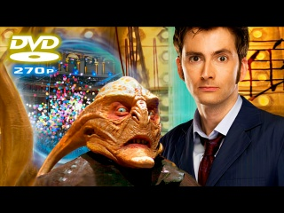
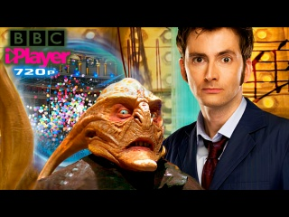
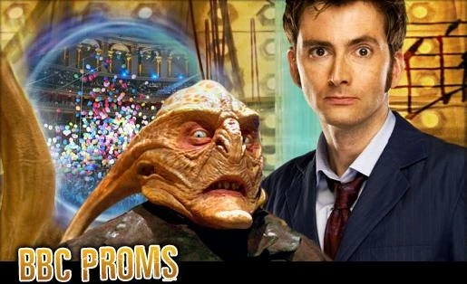

* VO [S@M]
 DVD версия в качестве 270p |  Концертная версия c BBC iPlayer в HD качестве 720p * начало не озвучено и не переведено |
Music of the Spheres
мини-эпизод для ВВС Proms
27 июля 2008
Формат: 7-минутный эпизод
| Варианты озвучек: | * VO [BaibaKo] * VO [S@M] |
|---|---|
| Скачивание и просмотр: |
Мини-эпизод впервые вышел в эфир радио 27 июля 2008 года, как часть концерта на ВВС Proms, известного как «Doctor Who at the Proms». Концерт Proms первоначально транслировался по радио, и поэтому мини-эпизод изначально увидела только аудитория в Королевском Альберт-Холле. «Музыка сфер» была единственным эпизодом «Доктора Кто», который в конечном счете транслировался на BBC One (1 января 2009 года)
